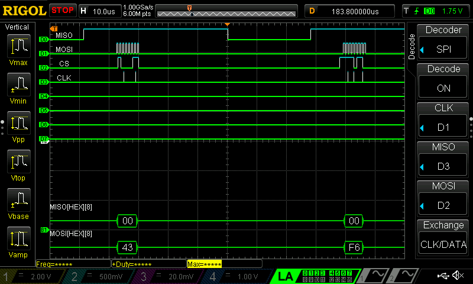

Lab 7
Quick Stats
Time Spent: 17 Hours
FSMs: surprisingly, only 2
Design Time | Build Time ratio: 50 | 50
Overall: Simulated Successfully
Lab 7: The Advanced Encryption Standard
Lab Task: Implement AES Encryption on our FPGA
This lab challenges students to implement a system which encrypts a 128-bit message according to the Advanced Encryption Standard (AES) as outlined in the 46-page specification here. This lab is unique in that it is more prescribed than others. Rather than accomplish a task by any means we choose, this lab asks students to create an encryption device which mirrors every step of the well-known encryption algorithm. Students still have flexibility to design how we choose, but the final product must meet strict specifications in order to function as intended.
Getting to know AES
I created the following flow diagram for myself to understand the system I planned to implement. Figure 2 shows the iterative process that AES performs. Given a 128-bit plaintext message and a 128-bit key message, our version of AES performs 10 rounds. Each step is described in detail within the AES standard, and serves to convolute and confuse the plaintext message in a predictable way until it results in an unintelligible 128-bit cyphertext message. The magic of the system is that a recipient who has the decryption key would be able to perfectly reverse the process and decipher the original plaintext message. However, to any interceptor without the decryption key, the encryption process is nearly impossible to reverse (even though each step is predictable)!
Implementing as HDL
When turning the AES process into implementable systemVerilog, I began by sketching a rough block diagram of the final top module. This left me with Figure 3 below.
The core module is the most complex, housing all of the logic necessary to support the 4 operations of AES. Further, the core module is responsible for coordinating these steps, setting appropriate delays, and asserting the final done output. In order to refine the process, I created Figure 4, a hardware-level design of what the core module might look like. Note that any hanging control signals are to be controlled by the embedded FSM – I created this block to understand how each part was connected, not yet how it was controlled.
Reading the specification, one realizes that the addroundkey function is relatively complex. The shiftRows and mixColumns functions are both fully executable using a combinational block with only 1 cycle of delay between storing the output. The subBytes function is more complex. It requires embedded RAM blocks to store a look up table for substitution, as well as 2 cycles of delay to account for the time it takes to fetch a value out of the table. Yet, this function was built largely for us within the starter code. This leaves us with the addroundkey function, which requires careful manipulation of individual bytes within the 128-bit originalKey according to the process roughly outlined in Figure 5 below.
Thus, I also paid special attention to drawing the full hardware implementation of the addroundkey function out. I included a key_schedule module within to assist the function, and a key_fsm further embedded to control the litany of control signals and timing necessary.
Adding Control Signals (FSMs)
In order to control the control signals within the key_schedule and core modules, I created two separate FSMs. They communicate with each other through the addroundkey Start and Done bits, with the core FSM directing the key FSM on when to begin a processing cycle. See the state diagrams in Figure 7 and Figure 8 below.
Final Code
See my github here for the full source code, organized as follows:
- The
MCUfolder contains all custom libraries and the main.c source file necessary to run a complete SPI system between the MCU and FPGA. This code was given verbatim by Prof Brake in the Lab 7 Starter Code. - The
FPGAfolder contains a source folder, holding all of the source code (including aes.sv). It also includes the Lattice Radiant project, used to synthesize and download the source code, and the ModelSim project, used to simulate and debug the source code. Note that all non- aes.sv files in the source are part of the starter code package, as well as some parts of aes.sv. The core of my generative work may be found by reading this report or exploring aes.sv. - The
notesAndExtrasfolder contains any additional notes, images, etc which support the project.
Simulation Results
After all this design work, my system simulated like a charm! I was quickly able to receive the testbench successful message, and verify by tracking the waveforms that my system responded as expected. Figure 9 and Figure 10 below show the beginning and end of the successful aes_core simulation, respectively. Note the successful run messages in the bottom left.
Finally, I was able to switch over to the SPI full-system testbench and similarly demonstrate success, as shown in Figure 11 below. Again, note the successful message in the bottom left.
Physical Hardware Results
As I moved to implement my system on my FPGA, I did not have to make any structural changes. I had already built my system to minimize the use of non-essential logic blocks. As such, I was able to easily synthesize and fit my logic on my FPGA.
However, I did have some timing errors within some of my longer control signals which stretched throughout the system. Yet, I was able to easily fix these errors by halving my clock frequency, from 48 MHz to 24 MHz. Note that under these conditions, I expect my AES system to take about 5 µs to complete across a total of 135 clock cycles. Wicked fast!
As I downloaded and synthesized my system, I was disappointed to see that PA10, the “unsuccessful transmission” LED, lit up upon my first system test. I hooked it up to the logic analyzer to diagnose the problem. I was able to demonstrate that the MCU was correctly sending out ALL signals – including both the plaintext and originalKey messages. Figure 12 below shows the proper beginning 3 bytes of the plaintext message.
Note on Logic Analyzer Lines For Figure 12 and Figure 13, D0 is CS, D1 is SCLK, D2 is COPI, D3 is CIPO. They are maddeningly mislabelled to the upper left and I could not remove these ghost labels.

Next, I checked to ensure that the transition between plaintext and originalKey was flawless. Figure 13 below shows the proper transition on the logic analyzer, as well as the proper ending to originalKey.
Additionally, I went back and recreated these instances while tracking the Load and Done bits. Both operated as expected. The gap between the two is nearly exactly 5 µs, exactly as predicted by my analysis of the FPGA HDL system. Yet, the problem seems to arise once the FPGA begins to shift the cyphertext back out. Figure 14 below shows the first unsuccessful bit of cyphertext.
Note on Logic Analyzer Lines For Figure 14, D0 is CS, D1 is SCLK, and D2 is COPI. Then, things change. D7 is CIPO, as the line was more reliable for some reason. I also added Load as D4, seen dropping low just at the start of Figure 14. Finally, I added Done on D5, shown asserting the expected 5 µs after Load drops.
After playing around with the timing, the simulation, and my FSMs, I was unable to reproduce or understand this error in any fixable way. It seems to simulate properly, but the hardware is errant somewhere.